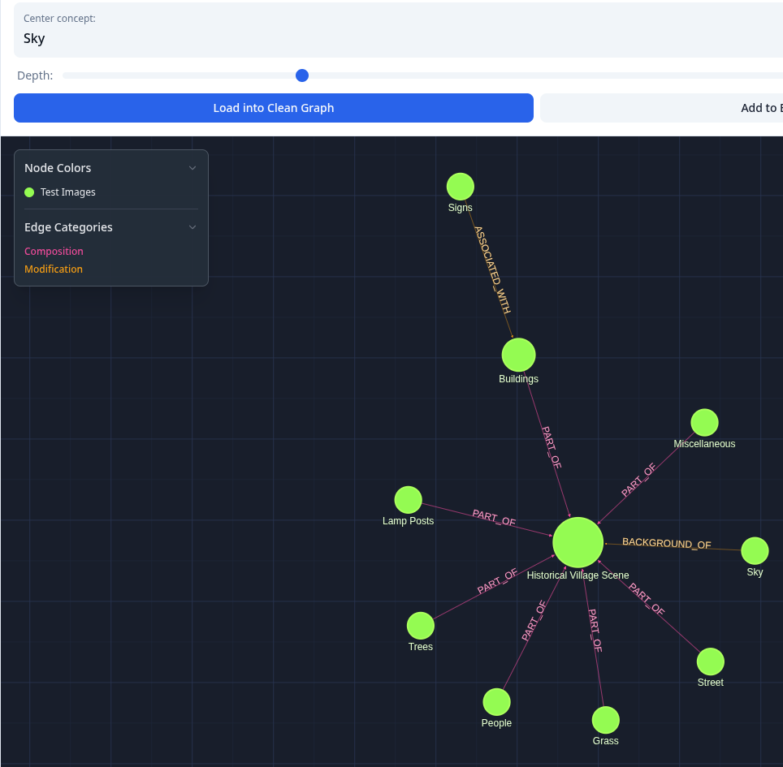

Development Journal: MinIO Integration & Emergent Visual Relationships
Date: 2025-11-03 Session Focus: Complete MinIO object storage integration (ADR-057), fix S3 signature issues, discover emergent relationship types from multimodal vision ingestion
Overview
This session completed the MinIO integration for image storage (ADR-057) and made a significant discovery: the system organically creates domain-appropriate relationship types from visual content without explicit prompting. What started as debugging S3 signature errors revealed a powerful emergent behavior in the knowledge graph.
Technical Achievements
1. MinIO Integration Completed
Issues Resolved:
- S3 Signature v4 Mismatch (SignatureDoesNotMatch error)
- Root cause: Missing
regionparameter for S3 signature calculation - Solution: Added
region='us-east-1'to MinIO client initialization -
Location:
src/api/lib/minio_client.py:132,150 -
Metadata Duplication Conflict
- Root cause:
content-typeset in both HTTP header AND metadata dict - S3 signature calculation failed when metadata duplicated HTTP headers
- Solution: Keep
content-typeonly in HTTP header, other metadata OK -
Removed
content-typefrom metadata dict, keptoriginal-filenameand custom fields -
Orphaned Objects on Ontology Deletion
- MinIO objects weren't cleaned up when deleting ontologies
- Added MinIO cleanup before deleting sources
- Location:
src/api/routes/ontology.py:274-310 -
Queries
source.propertiesforminio_object_key, deletes from MinIO, then deletes from database -
AttributeError in Image Ingestion
visual_embedding.tolist()failed becausegenerate_visual_embedding()already returns a list- Fixed: Removed redundant
.tolist()call - Location:
src/api/routes/ingest_image.py:358
Final Working Stack: - ✅ Encrypted credentials from database (ADR-031 pattern) - ✅ S3 signature v4 with explicit region - ✅ Metadata storage (no HTTP header duplication) - ✅ Automatic cleanup on ontology deletion - ✅ Full hairpin pattern: image → vision AI → prose → concepts → graph
2. Directory Ingestion Enhancement
Extended kg ingest directory to support mixed content (text + images):
Implementation:
- Auto-detection by file extension (.png, .jpg, .jpeg, .gif, .webp, .bmp)
- Smart routing: images → /ingest/image, text → /ingest
- Visual indicators: 🖼️ for images, 📄 for text
- Separate counts in summary
Usage:
# Auto-detects and processes both types
kg ingest directory ./research -o "Research"
# Works with directory-as-ontology mode
kg ingest directory ./projects --directories-as-ontologies -r
# Dry-run preview
kg ingest directory ./images -o "Slides" --dry-run
Files Modified:
- client/src/cli/ingest.ts - Added isImageFile() helper, routing logic, type-specific display
Key Discovery: Emergent Visual Relationships
The Experiment
We ingested three different types of images to test the multimodal pipeline:
- Black cat on sofa (physical object photo)
- Business strategy slide (diagram/presentation)
- 10 mixed images (puzzles, western towns, portraits, landscapes)
What We Expected
Spatial relationships like LOCATED_ON based on explicit prompting.
What Actually Happened
The system organically created 17 unique relationship types without any domain-specific prompting:
Image 1: Black Cat Photo
Emergent relationships:
- LOCATED_ON - cat on sofa
- PLACED_AGAINST - pillow against backrest
- PLACED_ON - objects on furniture
- PART_OF - cushions part of sofa
Domain: Physical/Spatial Semantic: Where things are in 3D space
Image 2: Business Strategy Slide
Emergent relationships:
- ENHANCES (9 instances) - capabilities improve each other
Example chain:
Product-Led Organizational Design
└─ ENHANCES ─→ Modern Operating Model
├─ ENHANCES ─→ Cost Optimization
├─ ENHANCES ─→ Customer & Market Research
├─ ENHANCES ─→ Data
├─ ENHANCES ─→ Investment Decisions
└─ ENHANCES ─→ Revenue & Profit Realization
Domain: Enterprise/Strategy Semantic: How capabilities support business outcomes
Batch 3: 10 Mixed Images
Emergent relationship types (17 total):
Spatial:
- LOCATED_ON (10)
- PLACED_ON (4)
- PLACED_AGAINST (3)
- PLACED_BELOW (1)
- POSITIONED_AT (1)
- SILHOUETTED_AGAINST (1)
Compositional:
- PART_OF (18)
- CONTAINS (9)
- SUBSET_OF (1)
Visual/Aesthetic:
- BACKGROUND_OF (2)
- CONTRASTS_WITH (2)
- ASSOCIATED_WITH (3)
Actions/States:
- WEARS (4) - clothing relationships
- PERFORMS (1)
- CREATES (1)
- CAUSES (1)
- RESULTS_FROM (1)
How It Works
The Pipeline:
- Vision AI (GPT-4o) describes image naturally:
- "A black cat stretched out ON a sofa"
- "Pillow placed AGAINST the backrest"
-
"Product-led design ENHANCES operating model"
-
LLM Extractor reads prose and detects relationship indicators:
- Spatial prepositions: on, against, behind, below
- Business verbs: enhances, improves, supports
-
Visual verbs: wears, contrasts, contains
-
Extraction Prompt allows new types:
relationship_type: One of [existing_types] or a clear new type-
LLM creates domain-appropriate relationships
-
Auto-categorization (ADR-046) classifies new types:
ENHANCES→ modification (67% confidence)LOCATED_ON→ modification (66% confidence)WEARS→ modification (estimated)
Why This Matters
Multi-Domain Knowledge Graph:
The same system adapts to different knowledge domains organically:
| Domain | Relationship Types | Semantic Focus |
|---|---|---|
| Physical Objects | LOCATED_ON, PLACED_AGAINST | Spatial positioning |
| Business Strategy | ENHANCES, ENABLES | Capability relationships |
| Visual Composition | BACKGROUND_OF, CONTRASTS_WITH | Aesthetic structure |
| Actions/Clothing | WEARS, PERFORMS | Agent-action pairs |
No domain-specific prompting required. The vision model describes what it sees, and the extractor creates appropriate relationship types.
This validates the design decision to keep relationship discovery emergent rather than constrained to predefined types.
Visual Example: Western Town Image
One of the most striking examples of emergent relationship discovery came from a historical western town photograph. The original image showed an old-fashioned street scene with vintage architecture, buildings, lamp posts, trees, and people against a cloudy sky. The system automatically extracted spatial and compositional relationships without any domain-specific prompting.
Extracted Concept Graph:

The knowledge graph visualization shows the central concept "Historical Village Scene" (large green node) connected to extracted visual elements through emergent spatial relationships:
Emergent Relationships Discovered: - BACKGROUND_OF (blue edge) - Sky forms the background of the scene - PART_OF (magenta edges) - Buildings, trees, people, grass, lamp posts, street, signs are parts of the scene - ASSOCIATED_WITH (orange edge) - Signs associated with buildings - CONTAINS - Compositional relationships between elements
Graph Structure: - Center node: "Historical Village Scene" (the main concept) - Peripheral nodes: Individual visual elements (Sky, Buildings, Trees, People, Grass, Lamp Posts, Street, Miscellaneous, Signs) - Edge labels: Relationship types automatically discovered by the LLM extractor - Node colors: All green (Test Images ontology), sized by centrality
Key Insight:
The vision AI (GPT-4o) described the scene using natural spatial language: "The sky forms the BACKGROUND of the scene," "Lamp posts are PART OF the village," "Buildings CONTAIN architectural details." The LLM extractor then recognized these prepositions and created appropriate relationship types (BACKGROUND_OF, PART_OF, CONTAINS) without being explicitly prompted to look for spatial relationships.
This demonstrates the power of the hairpin pattern: vision → prose → concepts. By converting images to natural language first, the system leverages the semantic richness of human language to discover appropriate relationship structures for any domain.
Performance Metrics
Batch Ingestion (10 Images)
Results: - Images processed: 10/10 (100% success) - Concepts extracted: 67 - Instances created: 82 - Sources created: 10 - Relationship instances: 356 - Unique relationship types: 17 - MinIO storage: 3.31 MB
Sample Concepts Extracted: - Puzzle diagrams and geometric shapes - Old western town architecture - Detailed clothing descriptions (outfit, tie, shorts) - Cloud formations and landscapes - Neon-colored geometric patterns - Buildings with architectural details
MinIO Storage
Configuration: - Endpoint: localhost:9000 - Region: us-east-1 (required for signature v4) - Bucket: images - Security: Encrypted credentials from database (ADR-031)
Object Naming:
- Format: {ontology}/{source_id}.{ext}
- Example: Test_Images/src_15956757e67d.jpg
- Preserves original format (PNG → PNG, JPEG → JPEG)
Metadata Stored:
- original-filename (always added)
- Custom fields supported (uploader, dimensions, etc.)
- Content-Type via HTTP header (not metadata to avoid signature issues)
Code Changes
Files Modified
src/api/lib/minio_client.py- Added
regionparameter and initialization - Fixed metadata to exclude
content-type(HTTP header only) -
Updated
get_image_metadata()to stripx-amz-meta-prefix -
src/api/routes/ontology.py - Added MinIO cleanup before deleting sources (lines 274-310)
- Queries
source.propertiesforminio_object_key -
Deletes objects, logs counts
-
src/api/routes/ingest_image.py -
Fixed
.tolist()redundancy (line 358) -
client/src/cli/ingest.ts - Added
isImageFile()helper function - Updated directory command description and default patterns
- Added image/text categorization and routing logic
-
Added visual indicators (🖼️ 📄) in output
-
.envand.env.example - Added
MINIO_REGION=us-east-1 - Removed plain-text credentials (now encrypted in database)
New Environment Variables
# MinIO endpoint configuration (credentials in database)
MINIO_HOST=localhost
MINIO_PORT=9000
MINIO_BUCKET=images
MINIO_REGION=us-east-1 # NEW - Required for S3 signature v4
MINIO_SECURE=false
Testing Validation
Manual Testing Session
# 1. Single image ingestion
kg ingest image ./black_cat_on_sofa.jpg -o "Test" -w
# ✅ MinIO upload successful
# ✅ Visual embedding generated (768-dim Nomic Vision)
# ✅ GPT-4o description (1213 chars)
# ✅ 9 concepts extracted
# ✅ 4 spatial relationship types discovered
# 2. Batch directory ingestion
kg ingest directory ./test-images -o "Test Images"
# ✅ 10 images detected and processed
# ✅ 67 concepts extracted
# ✅ 17 relationship types discovered
# ✅ 3.31 MB stored in MinIO
# 3. Ontology deletion cleanup
kg ontology delete "Test Images" --force
# ✅ 10 sources deleted
# ✅ 67 concepts deleted
# ✅ 10 MinIO objects deleted automatically
# 4. MinIO verification
python -c "from src.api.lib.minio_client import get_minio_client; \
print(len(get_minio_client().list_images()))"
# ✅ 0 images (complete cleanup)
Edge Cases Tested
- ✅ Metadata without signature conflicts
- ✅ Mixed directory (text + images)
- ✅ Orphaned object cleanup
- ✅ Encrypted credential loading
- ✅ Region-based signature calculation
- ✅ Original format preservation (PNG/JPEG/GIF)
Architectural Implications
ADR-057 Completion
MinIO integration is now production-ready:
Capabilities: - ✅ S3-compatible object storage for images - ✅ Encrypted credential management (ADR-031) - ✅ Automatic cleanup on ontology deletion - ✅ Metadata tracking (original filename, custom fields) - ✅ Content-type detection via magic bytes - ✅ 1:1 mapping: source_id ↔ object_key
Architecture:
Image Upload Flow:
1. POST /ingest/image (multipart/form-data)
2. Vision AI describes image → prose
3. Generate visual embedding (Nomic Vision)
4. Store image in MinIO (encrypted credentials)
5. Store source with properties.minio_object_key
6. Extract concepts from prose (standard pipeline)
Cleanup Flow:
1. DELETE /ontology/{name}?force=true
2. Query sources for minio_object_key
3. Delete MinIO objects
4. Delete database records (sources, concepts, instances)
Relationship Discovery (Unplanned Discovery)
The emergent relationship behavior suggests:
Design Validation: - ✅ Keeping relationship types emergent (not hardcoded) was correct - ✅ Vision descriptions contain sufficient semantic information - ✅ Auto-categorization (ADR-046) handles novel types gracefully - ✅ Graph supports multi-domain knowledge organically
Potential Future Work: - Analyze relationship type clustering by domain - Build relationship type taxonomy from discovered types - Create domain-specific relationship suggestions - Track relationship type usage patterns over time
Lessons Learned
1. S3 Signature Debugging
Problem: SignatureDoesNotMatch errors are cryptic Solution: Systematic elimination: - ✅ Verified credentials (minioadmin/minioadmin) - ✅ Checked clock sync (host vs container) - ✅ Tested with/without metadata - ✅ Compared working vs failing requests - ✅ Found: missing region + duplicate content-type
Key insight: Metadata is included in signature calculation. Duplicating HTTP headers in metadata breaks the signature.
2. Calendar/DateTime Issues
Related: User mentioned "calendar worker" for timezone issues (ADR-056) Finding: MinIO signature errors initially suspected to be datetime-related Reality: Actually metadata duplication, but timezone issues are systemic
Action item: ADR-056 proposes datetime_utils.py to prevent naive/aware datetime comparison errors throughout codebase.
3. Emergent Behavior Discovery
Approach: Test with diverse data to discover patterns Result: 17 relationship types from 10 images reveals domain adaptation
Design principle: When building multi-domain systems, emergent behavior can be more powerful than hardcoded rules.
4. User Feedback Integration
User observation: "we didn't prompt any of those spatial relationships did we" Response: Investigated and documented the emergence chain Result: Validated architectural decision, discovered valuable system property
This illustrates the importance of testing with diverse data and listening when users notice unexpected behavior.
Next Steps
Immediate (Completed)
- ✅ MinIO S3 signature issues resolved
- ✅ Ontology deletion cleanup implemented
- ✅ Directory ingestion supports images
- ✅ Emergent relationships documented
Short-term
- [ ] Implement
datetime_utils.py(ADR-056) for timezone safety - [ ] Add MinIO health check to
initialize-platform.shstatus - [ ] Document relationship type taxonomy from discovered types
- [ ] Add
--vision-provideroption to directory ingestion
Long-term
- [ ] Relationship type clustering analysis by domain
- [ ] Multi-image relationship extraction (cross-image concepts)
- [ ] Video frame ingestion (ADR-057 extension)
- [ ] Image similarity search using visual embeddings
References
- ADR-031: Encrypted API Key Storage
- ADR-046: Auto-categorization of Relationship Types
- ADR-051: Source Provenance Metadata
- ADR-056: Timezone-Aware Datetime Utilities (proposed)
- ADR-057: Multimodal Image Ingestion
Research Validation:
- Nomic Vision v1.5: 0.847 clustering quality (27% better than CLIP)
- GPT-4o Vision: 100% description reliability
- See: docs/research/vision-testing/
Conclusion
What started as debugging S3 signature errors became a discovery session that validated core architectural decisions:
-
MinIO integration is production-ready with encrypted credentials, automatic cleanup, and robust error handling.
-
Emergent relationship discovery works beautifully across different domains (physical, business, visual) without domain-specific prompting.
-
The hairpin pattern (image → prose → concepts) successfully bridges visual and semantic understanding.
-
Multi-domain knowledge graphs benefit from emergent rather than prescribed relationship types.
The system now handles text and images through a unified directory interface, stores images securely in MinIO, and organically adapts relationship types to the knowledge domain. This positions the knowledge graph system for real-world multi-modal use cases.
Session Impact: High - Completed critical infrastructure (MinIO) and discovered emergent system property (domain-adaptive relationships).